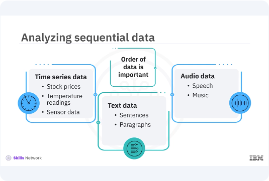
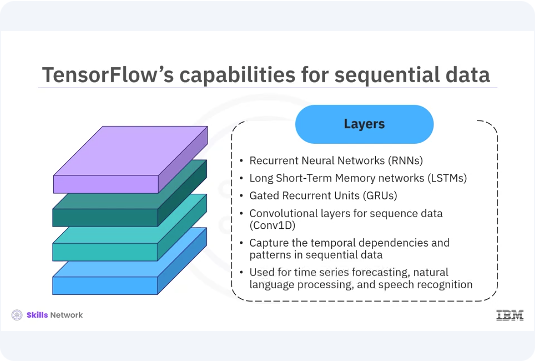
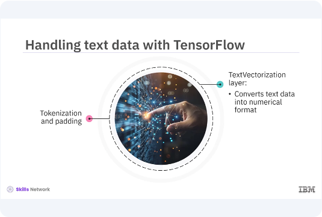
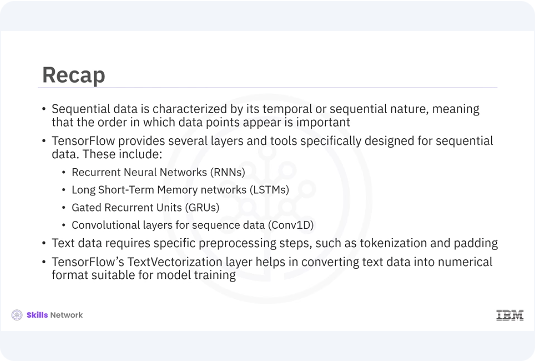

Tensorflow for Sequential Data
Welcome to this video on how to develop TensorFlow for sequential data. After watching this video, you'll be able to:
- Describe TensorFlow's capabilities for handling sequential data.
- Demonstrate how TensorFlow can be used to process and analyze sequential data with examples.
Sequential data, such as time series, text, and audio, is a type of data where the order of the data points is crucial. TensorFlow offers a range of tools and functionalities that makes it well-suited for processing and analyzing sequential data.

Sequential data is characterized by its temporal or sequential nature, meaning that the order in which the data points appear is important. Examples include time series data like stock prices, temperature readings, and sensor data, text data, like sentences and paragraphs, and audio data, like speech and music. Analyzing and making predictions on such data requires models that can capture the dependencies and patterns within the sequences.

TensorFlow provides several layers and tools specifically designed for sequential data. These include recurrent neural networks, RNNs, long short-term memory networks, LSTMs, gated recurrent units, GRUs, convolutional layers for sequence data, Conv1D. These patterns help in capturing the temporal dependencies and patterns in sequential data, making TensorFlow a powerful framework for tasks like time series forecasting, natural language processing, and speech recognition.

Let's start by building a simple RNN model using TensorFlow. You will use a time series data set and create an RNN model to predict future values. The model will consist of an RNN layer followed by a dense layer for output prediction.
pyenv activate venv3.10.4
import tensorflow as tf
from tensorflow.keras.models import Sequential
from tensorflow.keras.layers import SimpleRNN, Dense
# Generate some example sequential data
import numpy as np
# Create a simple sine wave dataset
def create_sine_wave_dataset(seq_length=100):
x = np.linspace(0, 50, seq_length)
y = np.sin(x)
return y
data = create_sine_wave_dataset()
time_steps = np.arange(len(data))
# Prepare the dataset
def prepare_data(data, time_steps, time_window):
X, Y = [], []
for i in range(len(data) - time_window):
X.append(data[i:i + time_window])
Y.append(data[i + time_window])
return np.array(X), np.array(Y)
time_window = 10
X, Y = prepare_data(data, time_steps, time_window)
In this example, first generate a simple sine wave data set for demonstration and define its dimensions. Then prepare the data set by creating sequences and corresponding labels.
# Reshape the data to match RNN input shape
X = X.reshape(X.shape[0], X.shape[1], 1)
# Build the RNN model
model = Sequential([
SimpleRNN(50, activation='relu', input_shape=(time_window, 1)),
Dense(1)
])
Now build an RNN model using TensorFlows, simple RNN, and dense layers.
# Compile the model
model.compile(optimizer='adam', loss='mse')
# Train the model
model.fit(X, Y, epochs=20, batch_size=16)
# Make predictions
predictions = model.predict(X)
# Plot the results
import matplotlib.pyplot as plt
plt.plot(time_steps, data, label='True Data')
plt.plot(time_steps[time_window:], predictions, label='Predictions')
plt.xlabel('Time Steps')
plt.ylabel('Value')
plt.legend()
plt.show()
Finally, compile and train the model. Make predictions, and plot the results.
from tensorflow.keras.layers import LSTM
# Build the LSTM model
lstm_model = Sequential([
LSTM(50, activation='relu', input_shape=(time_window, 1)),
Dense(1)
])
# Compile the model
lstm_model.compile(optimizer='adam', loss='mse')
# Train the model
lstm_model.fit(X, Y, epochs=20, batch_size=16)
# Make predictions
lstm_predictions = lstm_model.predict(X)
# Plot the results
import matplotlib.pyplot as plt
plt.plot(time_steps, data, label='True Data')
plt.plot(time_steps[time_window:], lstm_predictions, label='LSTM Predictions')
plt.xlabel('Time Steps')
plt.ylabel('Value')
plt.legend()
plt.show()
Now, let's build an LSTM model. LSTMs are a type of RNN that are capable of learning long-term dependencies, making them suitable for sequential data with long-term patterns. You will use the same data set and structure the model similar to your RNN model, but with LSTM layers. In this example, replace the simple RNN layer with an LSTM layer to build the LSTM model. Next, compile and train the LSTM model. Finally, make predictions and plot the results to compare with the true data.

Next, let's see how TensorFlow can be used to handle text data. Text data requires specific pre-processing steps such as tokenization and padding. TensorFlow's text vectorization layer helps in converting text data into numerical format suitable for model training.
from tensorflow.keras.layers import TextVectorization
# Sample text data
texts = [
"Hello, how are you?",
"I am fine, thank you.",
"How about you?",
"I am good too."
]
# Define the TextVectorization layer
vectorizer = TextVectorization(
output_mode='int',
max_tokens=100,
output_sequence_length=10
)
# Adapt the vectorizer to the text data
vectorizer.adapt(texts)
# Vectorize the text data
text_vectorized = vectorizer(texts)
print("Vectorized text data:\n", text_vectorized.numpy())
In this example, first, define sample text data. Then create a text vectorization layer to tokenize and pad the text sequences. Finally, adapt the vectorizer to the text data and transform the text into numerical format.

In this video, you learned sequential data is characterized by its temporal or sequential nature, meaning that the order in which the data points appear is important. TensorFlow provides several layers and tools specifically designed for sequential data. These include recurrent neural networks, RNNs, long short-term memory networks, LSTMs, gated recurrent units, GRUs, convolutional layers for sequence data, Conv1D. Text data requires specific pre-processing steps such as tokenization and padding. TensorFlow's text vectorization layer helps in converting text data into numerical format suitable for model training.